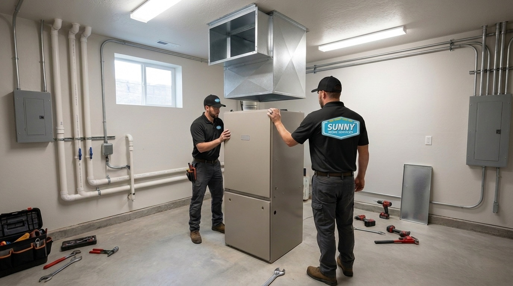

801.887.9650

Certified technicians. Free in-home estimate.

When winter drops into the southwest Salt Lake Valley, and the cold is trapped against the Oquirrhs for days, you want your furnace installation in West Jordan handled by people who live through these winters, too. Most Utah families feel stuck between two options: the big out-of-state chains that don’t really know the area and one-truck shops that mean well but often can’t deliver the speed and technology of a modern operation.
We’re the third option, with the expertise of a big company and the honesty of a local one. We deliver enterprise-grade scheduling, flat-rate pricing, and photo-documented work, run by a crew that answers to our neighbors. Book your local furnace replacement with us, and you get an upfront price before any work starts, a furnace sized properly for your home and our altitude, and your heat back fast, often the same day.

A handful of signs tell you that your furnace might be near its end. West Jordan’s long, high-altitude winters tend to bring the end faster. Most units last 15 to 20 years, and since the typical local home dates to the mid-1990s, there are many original furnaces right in that danger zone. Here’s a quick list of checks you can do yourself for a possible furnace replacement. If you’re nodding to three or more, it’s worth an assessment:
If a carbon monoxide alarm has tripped, don’t wait to call us. When we evaluate your system, we photograph and explain what we find, and we’ll help you assess whether a furnace repair or replacement is the smarter option long-term.
A new energy-efficient furnace starts paying for itself quickly. A furnace’s AFUE is its annual fuel utilization efficiency. That’s basically the ‘miles-per-gallon’ of your furnace. Many older units get by at 70% AFUE or lower. The U.S. Department of Energy explains that a 90% AFUE furnace converts 90% of its fuel into heat, with the rest lost. A modern condensing furnace turns up to 98% of its fuel into heat.
A furnace can only deliver its rated efficiency if it’s sized for where it’s running, and that’s where the big chains miss our local reality. West Jordan sits at around 4,300 feet, and a furnace has to be derated for that altitude to fire efficiently. If a furnace here is sized for sea-level conditions, it’ll lose capacity and burn extra fuel before our first cold snap. Modern units also run quieter, heat more evenly, and add a layer of safety with sealed combustion. Swap out an aging furnace, and many West Jordan homeowners trim up to 40% off their winter gas bill.
We install every major furnace brand, both gas and electric, so you get the right system for your home. As one of West Jordan's full-service gas furnace installation companies, we set up high-efficiency condensing gas furnaces and cost-effective units for valley homes on natural gas.
If you don’t have gas service, or if your layout is better suited to electric, our electric furnace installers size and configure the right system for you. Our free assessments check your ductwork, fuel costs, and how your home retains heat, and then we walk you through our recommendations so you can decide the next step.
Every install starts with a real load calculation, a Manual J®, run by the numbers and adjusted for our altitude. Other furnace replacement companies skip that adjustment and hand you an oversized unit that short-cycles and burns out years early. We measure first, then document the whole job. And we’ll pair your new furnace with a smart thermostat.

Financing is available for your furnace installation in West Jordan, so a no-heat night doesn’t have to wait. You get a digital, itemized quote on your phone, plus flexible payment plans that spread the cost over time.
If your current unit is older and inefficient, the lower monthly gas bill of a newer, more efficient furnace offsets a real chunk of the payment.
We're the furnace replacement company built for how Wasatch Front families live: quick when it's freezing, clear on price, and easy to have in your house. Search ‘furnace installers in my area’ on a no-heat night, and you’ll get a screen full of names. Our Sunny Home Services crew brings 30-plus years of combined HVAC experience, and every technician is NATE-certified, background-checked, drug-tested, and uniformed. Before anyone knocks, you get a text with their name, photo, and a short bio. You can even track your technician’s arrival in real time.
With us, count on:
From permits and startup to cleanup, our West Jordan furnace install services cover the whole job. We've served Salt Lake County and the wider Wasatch Front since 2019. We don't give you a high-pressure pitch, we give you smart systems, real people who know the area, and a house that's warm again.

Let’s get your furnace taken care of before the next cold snap. Contact us, and we’ll book a no-obligation, free in-home assessment. Every install is backed by our satisfaction guarantee.